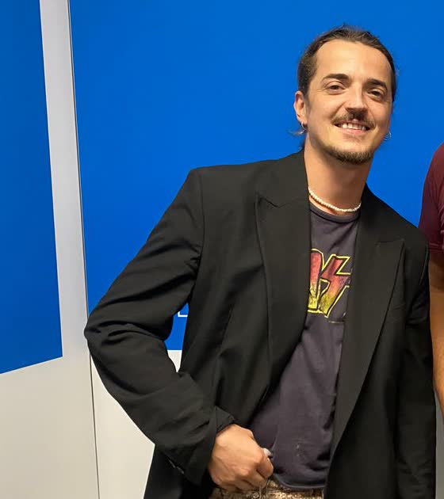
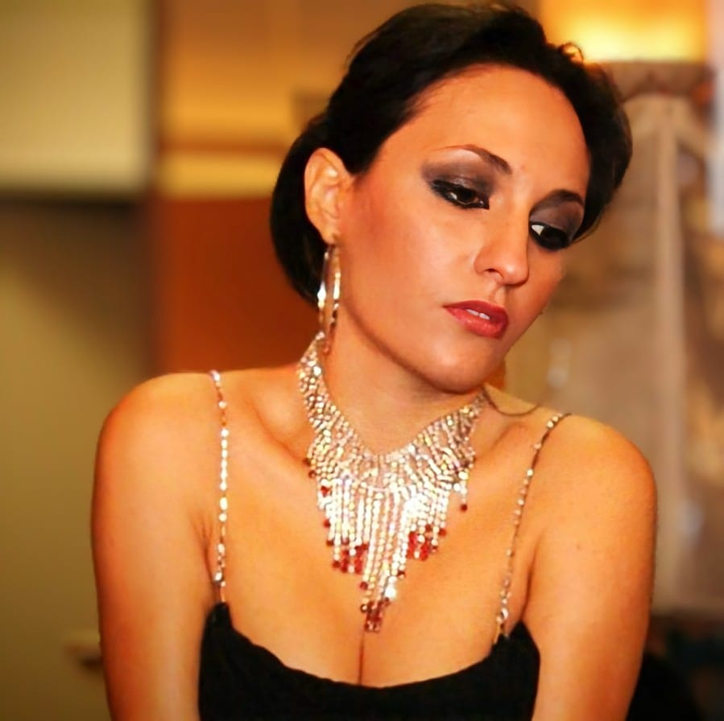
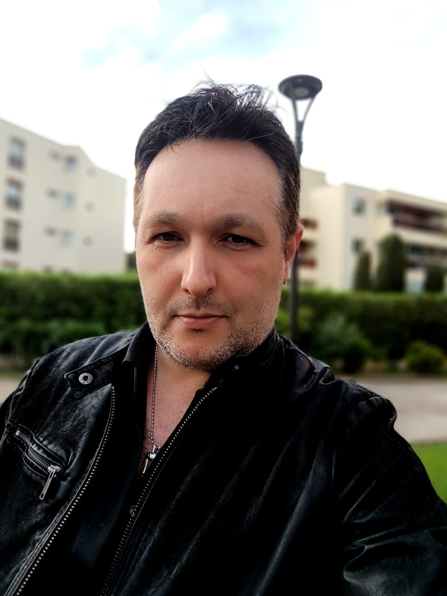
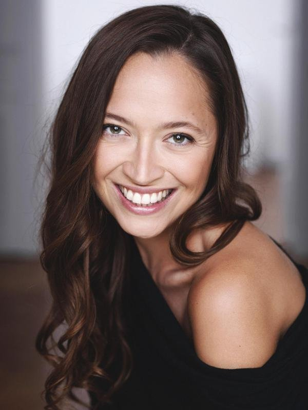
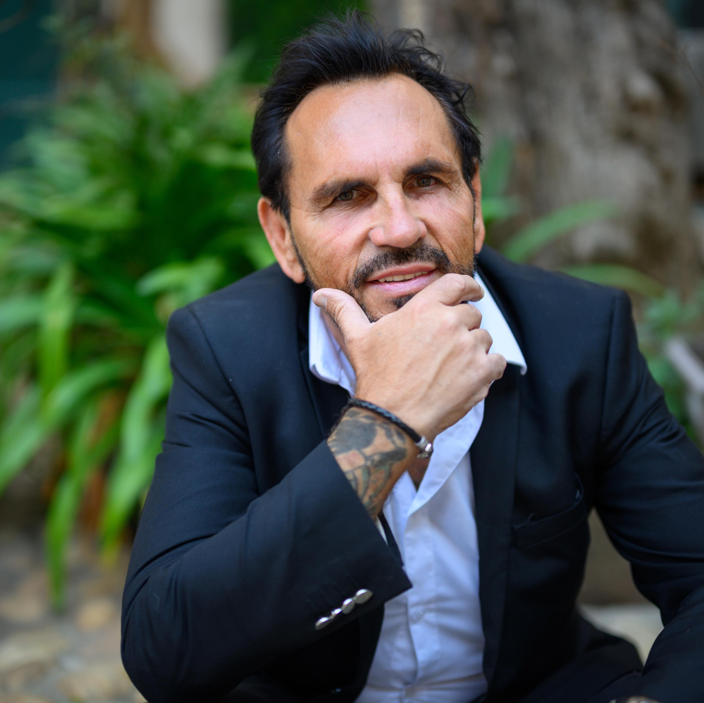

Un medley chanté d'un seul tenant, monté et minuté à la seconde. Il s'enchaîne sans interruption : aucun temps mort, aucun changement de plateau, aucune annonce.
Version de travail, avant mastering final — la durée, elle, est définitive. Les six voix sont chantées en direct par-dessus la bande orchestrale.
Telle qu'elle sera jouée le soir du concert : les orchestrations seules, sans les chanteurs.
La même bande avec des repères de voix, pour entendre le rendu complet. Ces voix ne seront pas diffusées : elles seront chantées sur scène.
Micros, diffusion, plateau, lumière, effets, vidéo, déroulé minuté et récapitulatif des demandes — tout y est, classé par priorité.
Télécharger la fiche — PDF| 6 micros HF main identiques, six canaux simultanés — Beta 87A ou supérieur | Indispensable |
| 2 à 3 micros de secours, allumés et réglés en coulisse | Indispensable |
| Lecture d'un fichier unique — vidéo + son, ou audio seul | Indispensable |
| Douches sur positions numérotées, complétées en face | Indispensable |
| Coloration du cyclorama — une couleur par univers | Fortement souhaité |
| Poursuite et poursuiteur — cadrage médaillon | Souhaité |
| Un effet de fumée lourde, sur un seul moment | Souhaité |
| Écran ou surface de projection — contenu créé en conséquence | Souhaité |
| Marques au sol discrètes · hazer léger en fond | Optionnel |
Les lignes en italique sont des transitions — habillées et enchaînées, jamais silencieuses.





Tout est préparé en amont — plan de placement, conduite lumière et fichier de diffusion suivront cette fiche. Aucun détail ne sera découvert le jour J.